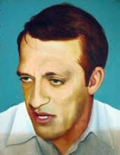
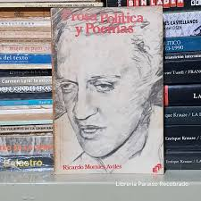
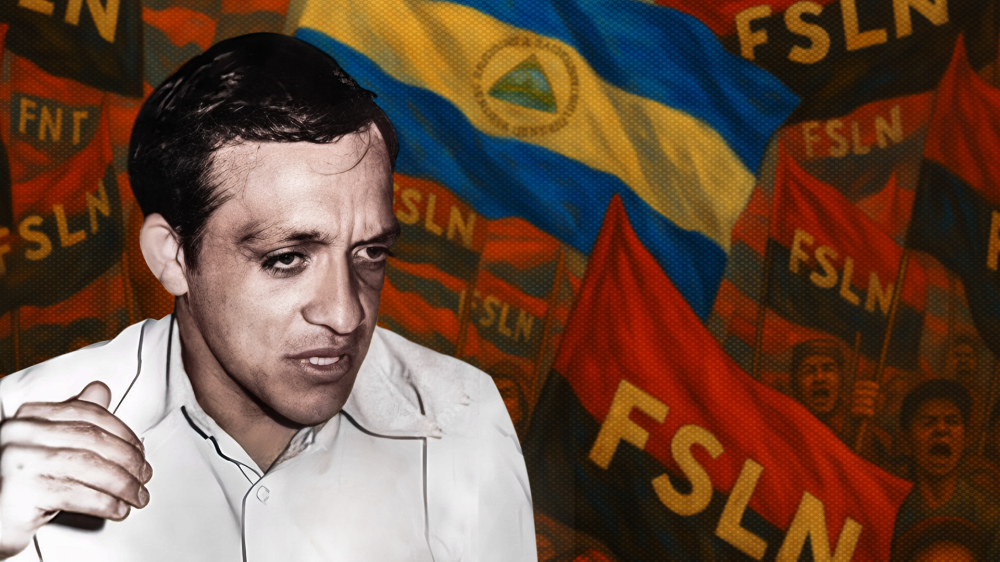

Panorama general
Ricardo Morales Avilés es recordado por su aporte a la reflexión histórica, literaria y cívica. En distintos espacios —la academia, la producción escrita y los foros de debate público— impulsó una visión de país en la que la cultura no fuera un lujo, sino una herramienta de identidad y transformación. Su manera de escribir, enseñar y analizar los procesos sociales permitió que nuevas generaciones se acercaran al patrimonio intelectual de Nicaragua con mayor profundidad crítica.
Este material está diseñado para estudiantes, docentes y cualquier persona que quiera estudiar su contribución desde diferentes ángulos: su formación, sus etapas de producción, sus temas principales y la influencia concreta que dejó en la vida nacional.
Objetivo del sitio: ofrecer una lectura clara, extensa y organizada sobre Ricardo Morales Avilés, reuniendo datos biográficos, líneas de trabajo, principales aportes y su impacto cultural e histórico.
Galería introductoria


